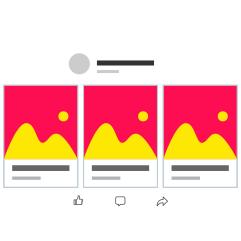

Una tarde, mientras Ana revisa Facebook, se da cuenta que mañana es el cumpleaños de su mejor amiga y no lo recordaba.
Minutos antes había visto una publicación de la página de Facebook “Pastelería Victoria”.

Regresa a la publicación de “Pastelería Victoria”, entra a la tienda de la página y explora los pasteles, ¡Esta el sabor favorito de su amiga!

Ana lo compra justo a tiempo para salvar su amistad.